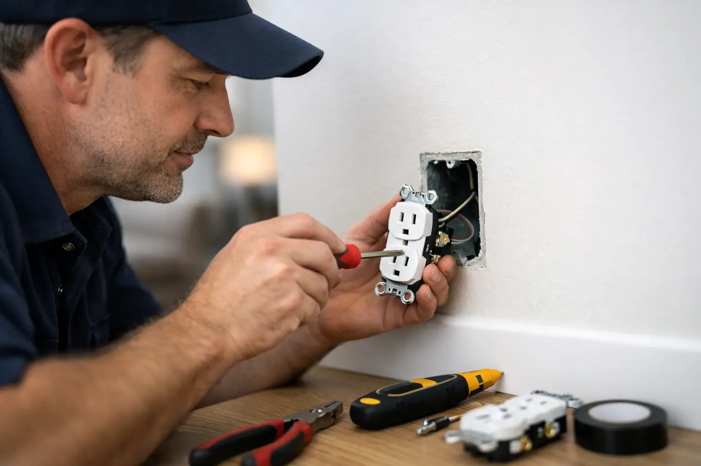

Can a Handyman Replace Outlets? What to Know
By Vitalii Nestorenko · August 21, 2026 · 6 min read
A loose outlet, cracked cover plate, or plug that will not hold a charger can turn a small annoyance into a real safety concern. So, can a handyman replace outlets? Sometimes, but the right answer depends on the scope of the work, the handyman’s electrical qualifications, and whether there are signs of a larger wiring problem behind the wall.
For a straightforward replacement, the job may look small. But outlets are connected to your home’s electrical system, and a mistake can create shock, fire, or code-compliance issues. The goal is not simply to get a new receptacle on the wall. It is to make sure the connection is safe, secure, and suitable for the location.
Can a Handyman Replace Outlets Legally and Safely?
A handyman may be able to handle an outlet replacement when they are properly qualified, licensed where required, insured, and permitted to perform the electrical work involved. In Alberta, electrical work is regulated for good reason. Requirements can vary based on the property, the exact repair, and whether the work goes beyond replacing an existing device.
Before booking anyone, ask a direct question: are you qualified and authorized to perform this type of electrical work in my home? A dependable service provider should answer clearly, explain the scope they can take on, and tell you when a licensed electrical contractor or permit is needed.
Replacing a standard, working outlet with a comparable new one is very different from adding an outlet, moving one, changing circuits, repairing damaged wiring, or upgrading electrical protection. Those larger jobs commonly require a licensed electrician and may require permits and inspection.
For homeowners, renters, and landlords, the practical rule is simple: do not choose based on the size of the outlet alone. Choose based on the condition of the circuit and the qualifications of the person doing the work.
When an Outlet Replacement Is Usually Straightforward
A simple replacement may be appropriate when the existing outlet is in a dry, accessible location and there are no warning signs of electrical damage. Common reasons include a worn receptacle that no longer grips plugs properly, a chipped or discoloured face, a broken cover plate, or an older outlet being replaced with a matching approved device.
Even then, the work should include more than removing one device and installing another. The person doing the job needs to confirm the outlet is properly secured, that connections are sound, that grounding is addressed correctly, and that the correct type of receptacle is used for the area.
A kitchen, bathroom, garage, laundry space, unfinished basement, exterior wall, or location near water deserves extra care. These areas may need ground-fault circuit interrupter protection, often called GFCI protection, or other safeguards. A standard outlet is not automatically the right replacement simply because it fits the electrical box.
If you are replacing outlets as part of a small update before selling, moving in, or preparing a rental property, it can be efficient to have a qualified professional inspect several outlets during the same visit. That is often better than addressing one visibly damaged receptacle while missing another loose or failing one nearby.
Warning Signs That Call for an Electrician
An outlet should never be treated as a cosmetic repair if it is showing signs of overheating, poor connections, moisture exposure, or circuit trouble. Stop using the outlet and arrange qualified electrical service if you notice any of the following:
- The outlet or cover plate feels warm, looks scorched, or smells burnt.
- Sparks appear repeatedly when plugs are inserted or removed.
- A breaker trips, lights flicker, or power cuts out when the outlet is used.
- The receptacle is loose in the wall, cracked, wet, or damaged by an impact.
- Two-prong outlets, ungrounded wiring, aluminium wiring, or old wiring may be present.
- You want to add an outlet, relocate it, install a higher-capacity circuit, or connect a major appliance.
These symptoms can point to a problem behind the wall or at the electrical panel. Replacing the visible receptacle alone may hide the issue temporarily without fixing the cause.
A qualified electrician can test the circuit, inspect the box and wiring, identify incorrect grounding or polarity, and determine whether the problem is isolated or part of a broader concern. That extra step protects your home and avoids repeat repair costs.
Why the Cheapest Fix Can Become the Expensive One
Outlet replacement is often priced as a small job, which makes it tempting to hire the first available person or attempt it yourself. The risk is that electrical problems are not always visible from the front of the outlet.
A loose connection can generate heat over time. An incorrectly selected outlet may not provide the required protection in a wet area. A damaged electrical box, brittle insulation, or overcrowded wiring can turn a quick replacement into work that needs a different plan.
There is also a property-management side to the decision. Landlords need safe, reliable repairs that stand up to tenant use and preserve the condition of the unit. Homeowners want confidence that an upgrade will not complicate a future inspection or insurance claim. Clear documentation, qualified workmanship, and proper approvals where required are worth more than saving a few dollars on a rushed repair.
What to Ask Before Hiring a Handyman for Outlet Work
You do not need to be an electrical expert to hire confidently. Start by describing the issue clearly: is the outlet loose, dead, warm, damaged, or simply outdated? Mention where it is located and whether the breaker has tripped.
Then ask whether the provider is qualified for outlet replacement, carries appropriate insurance, and will tell you if the job needs an electrician instead. Ask whether the quoted price includes the outlet, cover plate, testing, and clean-up, or whether those items are separate. Straight answers are a good sign.
It is also reasonable to ask what happens if the technician finds damaged wiring or a code-related issue after opening the wall box. A professional should not promise to force every repair into the original price. They should explain the finding, outline the next safe step, and get your approval before proceeding.
For Calgary homeowners juggling several repairs, it can be helpful to book a service provider who can complete the non-electrical tasks during the same visit, such as drywall touch-ups around a damaged box, replacing a cover plate, adjusting doors, mounting a TV, or handling caulking and small maintenance items. Nestor’s Home Help takes that practical, owner-operated approach while keeping safety and proper job scope first.
Do Not Ignore Outlet Problems Between Appointments
Until the outlet is assessed, avoid overloading it with power bars, extension cords, heaters, window air conditioners, or high-draw appliances. If it is hot, sparking, smoking, wet, or producing a burning smell, stop using it immediately. Turn off power at the breaker only if you can do so safely, and contact qualified help.
Do not cover a damaged outlet with furniture and hope it disappears from view. Small electrical warning signs have a way of becoming urgent at the worst possible time.
A properly replaced outlet should feel secure, hold plugs firmly, suit the room it is in, and give you no reason to think about it again. If yours does anything less, book a qualified professional and get the repair handled before a minor inconvenience becomes a bigger home problem.
Vitalii Nestorenko is the owner of Nestor's Home Help, a licensed and insured handyman business in Calgary. He holds a Master's degree in mechanical engineering and does every job himself.